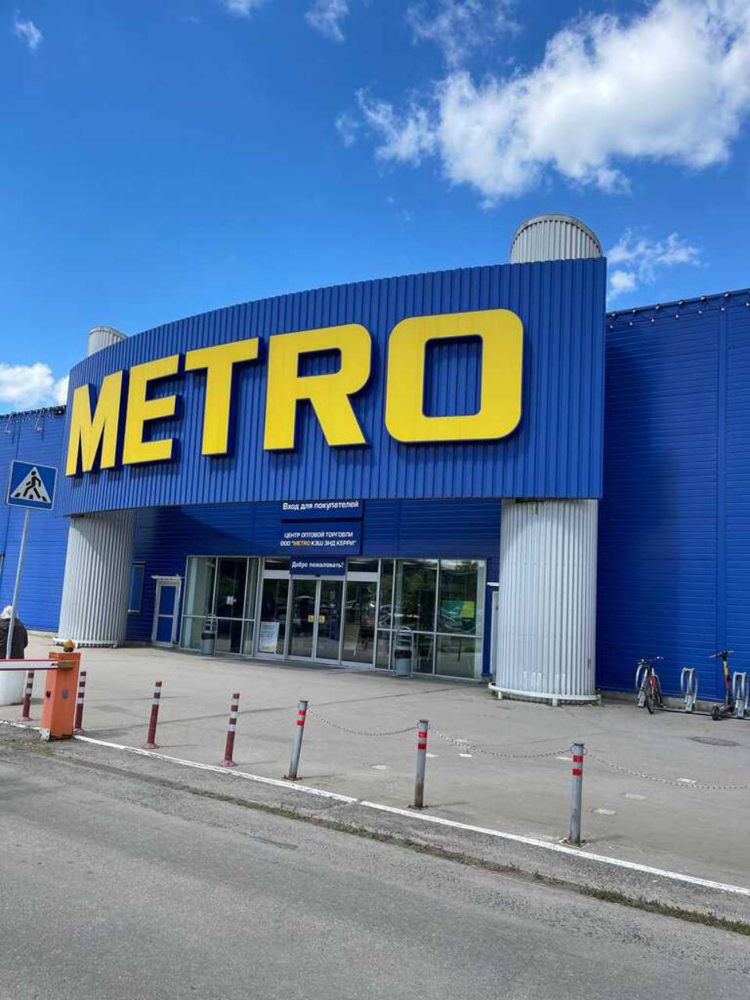
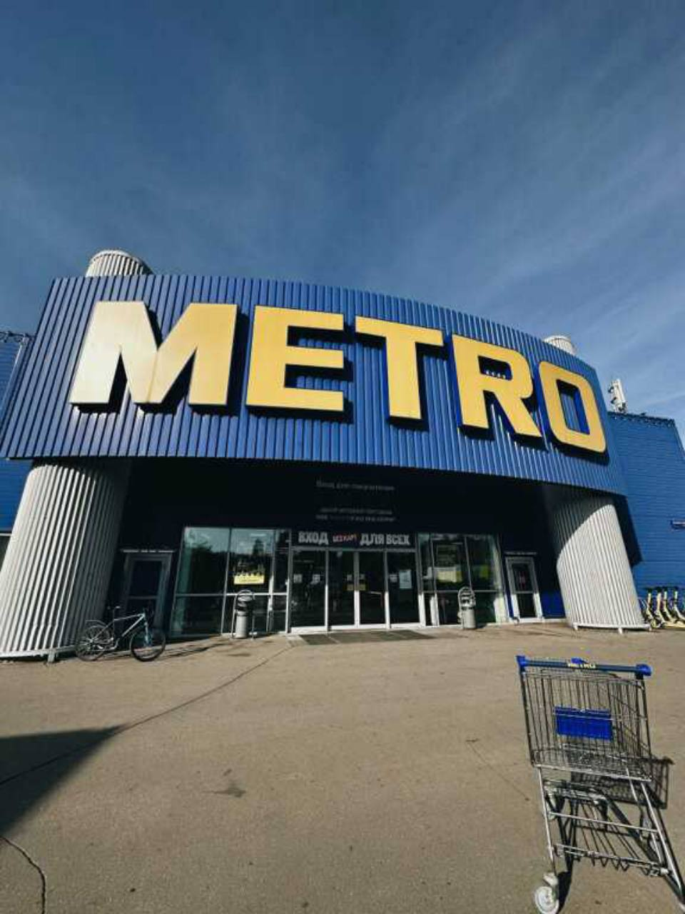

В основе —
опыт бизнеса.
METRO работает с ресторанами, отелями и независимой розницей. Эта специализация — важная часть характера сети.
METRO для бизнеса ↗
У каждого большого вкуса есть свой адрес.
Маршала Прошлякова, 14.
Начните с того, что хочется приготовить.
Дальше — выбирайте свой маршрут.
Томаты, зелень, авокадо. Соберите основу для салата, закусок или нового любимого блюда.
Посмотреть идеи ↗От одного ингредиента — к целой вселенной вкуса.
Листайте, чтобы собрать композицию.
Не обещание «лучше всех».
Понятные причины познакомиться ближе.
METRO работает с ресторанами, отелями и независимой розницей. Эта специализация — важная часть характера сети.
METRO для бизнеса ↗Планируйте покупку вокруг блюда: от основных ингредиентов до подачи. Наши подборки помогут начать.
Выбрать рецепт ↗METRO в Строгино — на улице Маршала Прошлякова, 14. Оцените маршрут и актуальную информацию перед поездкой.
Познакомиться с магазином ↗От первого ингредиента
до последнего «это было невероятно».
Ужин без спешки. Завтрак для любимых.
Или просто желание попробовать новое.
Выберите настроение — мы подскажем идею.
Томаты, базилик, паста и немного вашего настроения.
Не нужно усложнять, чтобы получилось особенное.
Разрежьте пополам и прогрейте с оливковым маслом: сок станет основой соуса.
Добавьте листья в самом конце, чтобы сохранить аромат и свежий цвет.
Ориентируйтесь на время на упаковке. Сохраните немного воды от варки для соуса.
Завершите блюдо небольшим количеством оливкового масла и сразу подавайте.
Начало истории METRO Cash & Carry в Германии. В центре концепции — самостоятельная закупка для профессиональных клиентов.
В ноябре в Москве открылись два первых российских торговых центра METRO.
METRO отмечает шестидесятилетие — путь от немецкого торгового центра до международного оптового бизнеса.
Синий фасад. Жёлтые буквы. Знакомый вход.
Реальные фотографии магазина, предоставленные для проекта.


Москва
ул. Маршала Прошлякова, 14